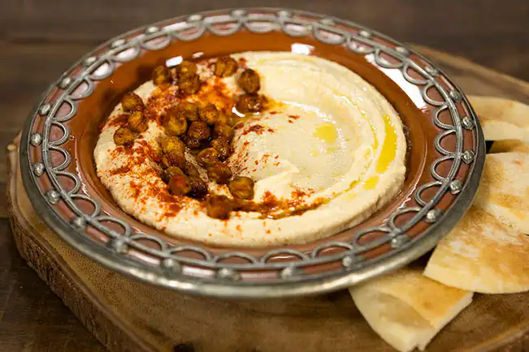

Ingredientes
- 1 lata (400g) de grão de bico
- 175g de tahine
- 6 tomates secos
- Meia pimenta vermelha
- Uma pitada de pimenta caiena
- 1 dente de alho
- Um fio de azeite de oliva
Instruções
- Retire a casca do alho e pique grosseiramente.
- Retire as sementes e o talo da pimenta, e pique grosseiramente.
- Coloque todos os ingredientes no processador.
-
Processe até virar uma pasta.
- Para um homus com pedacinhos, processe por menos tempo.
- Para um homus lisinho, processe por mais tempo.
- Experimente variações com limão, coentro, pimenta chili, hortelã ou queijo feta.
Armazenamento
Guarde em recipiente fechado na geladeira por até uma semana. Pode congelar por alguns meses.
Imagens da Receita
